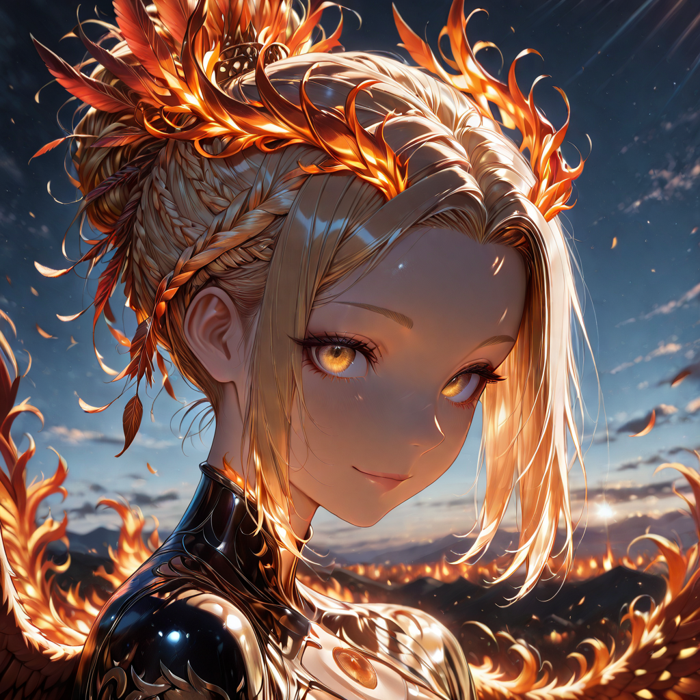
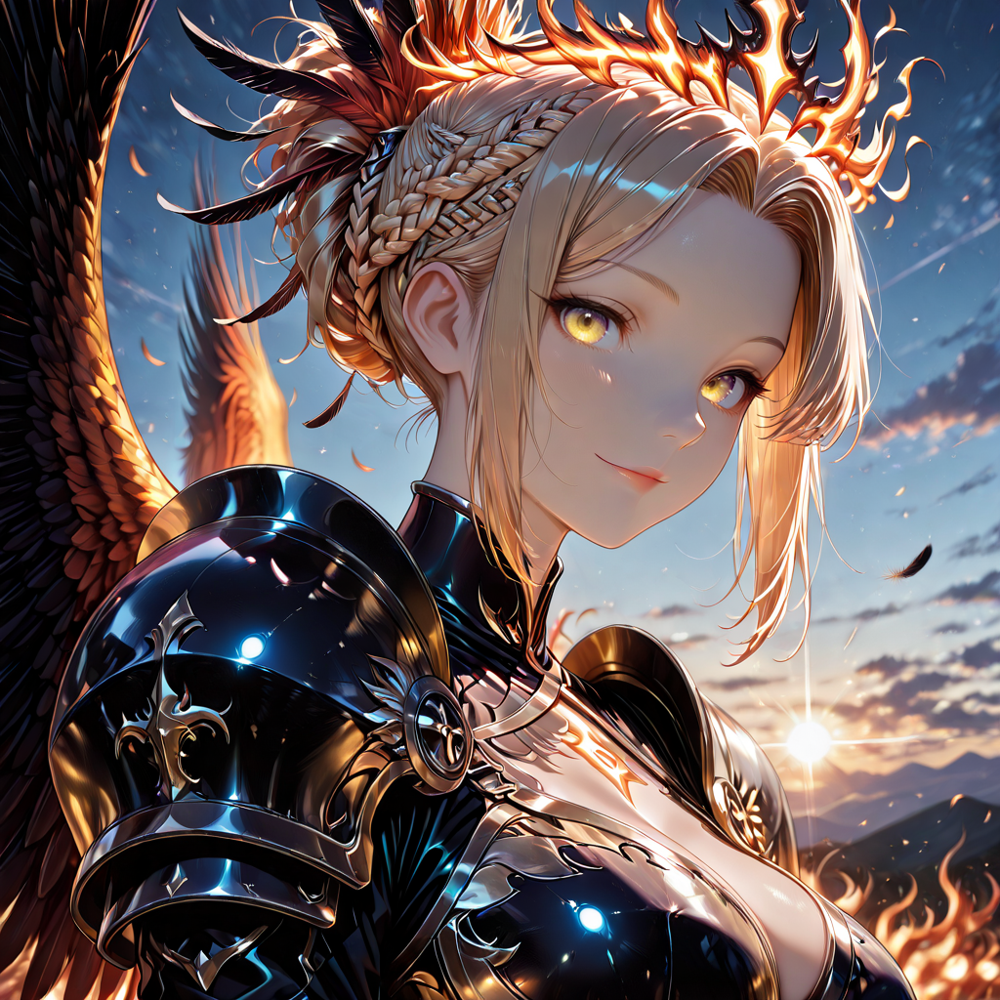
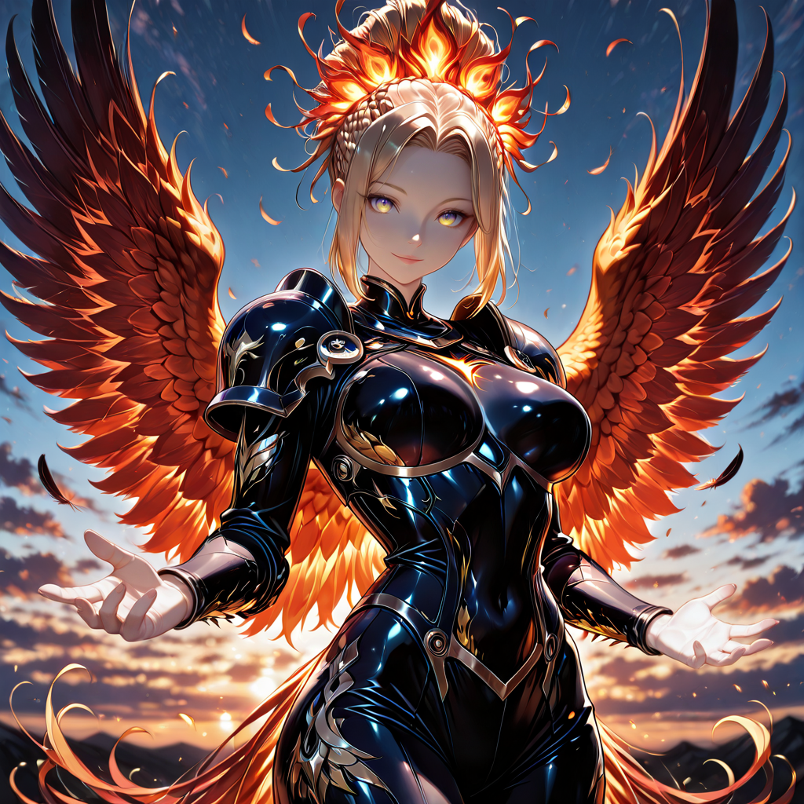
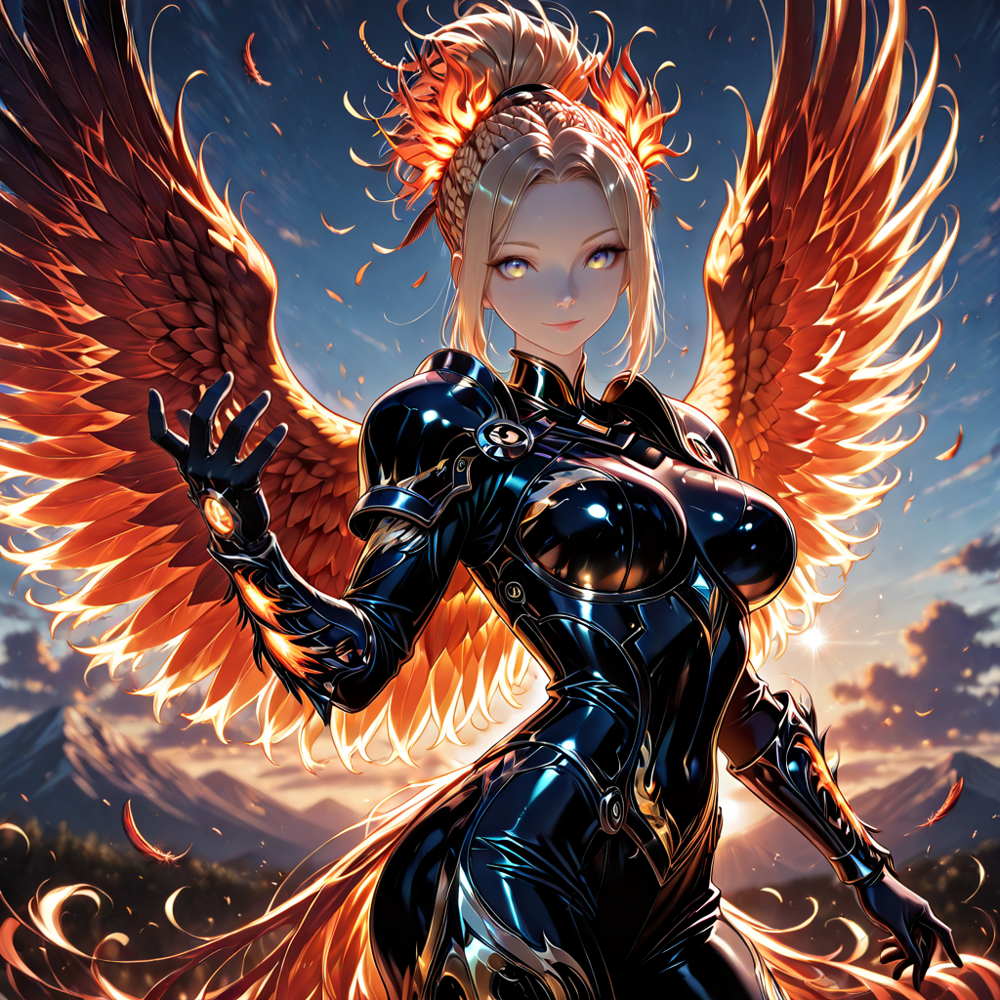

Voice of the Ancient Heartbeat
The sky at dusk burns in shades of gold and crimson. Wind moves through the century-old trees of an immense forest, carrying not the smell of death, but the sharp scent of warm ash and freshly bloomed flowers. From the top of a cliff of black rock, a figure watches the horizon. Immense wings of feather and fire unfurl slowly, reflecting the light on her bio-obsidian armor. Her amber eyes burn with an ancient, implacable intelligence.
They build their cities of stone and metal, believing they have chained the world. But stone crumbles. Metal rusts. The arrogance of the scaleless, the rootless, has made them blind and weak.
We are the reminder they buried. We are the predator waiting in the tall grass, the thorn that poisons the blood, the spark that devours the dead forest to let it rise stronger.
I am Khora. Fire of the first dawn flows through my veins; in my wings rests the promise of a new beginning. If they seek war, they will not find soldiers waiting for them... they will find evolution itself.
Let them advance. The earth is hungry."

The Flame That Commands
Khora is not a general. She is a force of nature that learned patience. She watched a thousand years of cycles , forests burned and reborn, species extinct and evolved, rivers running dry and then flooding new valleys. Every cataclysm she witnessed, she absorbed. Every lesson the world taught in blood and ash, she memorized.
She does not give orders. She sets examples. When she burns something, it is never out of rage , it is because she has already seen what will grow in the cinders. She chooses her battles the way fire chooses its path: following the dry wood, avoiding the stone, leaving the green things alone.
On the battlefield, Khora is an apex predator and a living wildfire simultaneously. She wields two weapons: the Emberwing , great fire-feather projectiles launched from her wings that ignite on contact , and the Bio-Obsidian Talons, melee weapons that inject volcanic mineral compounds directly into wounds, causing progressive crystallization of enemy tissue.
Her presence alone is a tactical asset. The Apex Predators around her fight harder and smarter. The Echoes at her flanks bloom with accelerated growth. She is the eye of the storm: the one point in the chaos where everything is completely, terrifyingly calm.
Gallery



Tactical Data

Emberwing Strike
Base Attackccumulates up to 3 stacks, each increasing damage taken from Khora by 8%.

Obsidian Rend
Active — Consumes SmolderKhora dives into a single target and detonates all Smolder marks on impact.
- Consumes all Smolder stacks on the target.
- 1 stack: Armor Break (2 turns).
- 2 stacks: Slow −40% (2 turns).
- 3 stacks: Petrified — Stunned (1 turn) + 25% splash to adjacent enemies.

Apex Presence
Passive